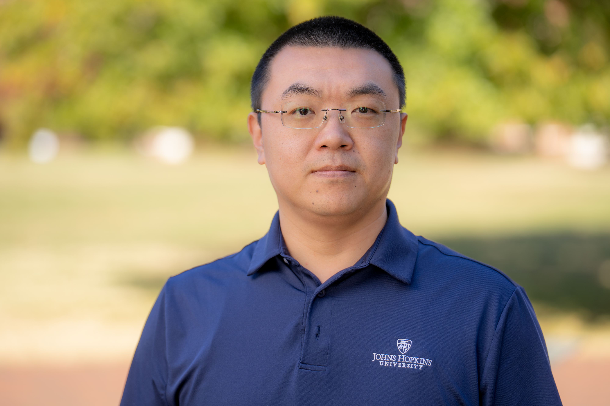

Yaxing Yao
Assistant Professor
Department of Computer Science
Whiting School of Engineering
Johns Hopkins University
Announcements
For Prospective Students
I am looking for motivated students to work with me on topics related to HCI, usable privacy, accessibility, and emerging technologies. If you are interested, please send me your CV and a brief introduction of your research interests.
Upcoming Travels
August, 2025: SOUPS 2025, Seattle
I am a privacy researcher. My research lies in the intersection of Human-Computer Interaction (HCI), Privacy/Security, and Accessibility. I aim to enhance people's privacy literacy and empower them with more control of their privacy in our increasingly complicated socio-technical environment. My research covers various technological contexts (e.g., AI, embodied AI agents, online privacy) and several user groups, including at-risk populations (e.g., people with disabilities, children, and teenagers).
I publish at top HCI and privacy venues, such as CHI, CSCW, SOUPS, USENIX Security, PoPETS, ASSETS, etc. My work has been generously supported by the National Science Foundation, Meta, and Google.
- Co-design privacy educational interfaces for children
- Build AI-powered systems to enhance users' awareness and control of their privacy
- Design privacy notices in emerging technologies (e.g., VR, AI) and evaluate them using eye-tracking technologies
- Empower users to combat dark patterns
- Support flexible and safe self-representations for people with disabilities in social VR
- Ensure teenagers' safety in social VR
I was a postdoctoral researcher in the Institute for Software Research at Carnegie Mellon University, working with Prof. Norman Sadeh. I completed my PhD in Information Science from the School of Information Studies at Syracuse University (2020). Before I joined the PhD program at Syracuse, I was a professional software engineer at a startup in Seattle, WA.
I received my Master of Science in Information Management from the Information School at the University of Washington (2014), and a Bachelor of Business Administration from Harbin Institute of Technology in China (2012).
Inspired by Dr. Jessica Vitak, a well-respected mentor and collaborator who has been inspiring me over the years with her "CV of Failure", I also compiled my version of CV of Failure to document my unsuccessful experiences in my academic journey. I hope it can help convey a core message: don't be discouraged by rejections and failure. Things happen, and when they do, keep calm and carry on.